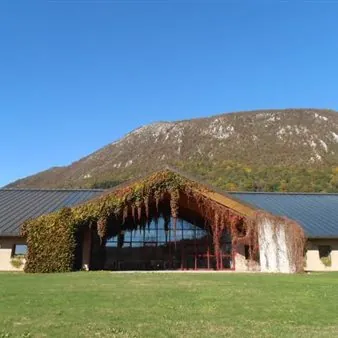

da sab 7 nov a dom 8 nov
WeFood 2026
Le Fabbriche del Gusto aprono al pubblico per un fine settimana di visite guidate, degustazioni, showcooking e laboratori nelle aziende enogastronomiche.
 Indicazioni
Indicazioni
- Costi e prenotazioni
- Costo non indicato · Prenotazione non indicata
- Programma
- Programma raccolto. Gli appuntamenti delle diverse schede sono riuniti in questa pagina.
- In caso di maltempo
- Nessuna indicazione specifica pubblicata.
- Note
- Le schede dei singoli appuntamenti sono state unite nella manifestazione principale.
L’EVENTO
Descrizione completa
Visita guidata di circa 40 minuti alla cantina Dri Roncat, alla scoperta delle fasi di produzione del vino, dalla vendemmia alla fermentazione e all’affinamento in botte, con degustazione finale di vini selezionati.
Prenotazioni e orari sul sito .
Programma Prenotazioni e orari sul sito .
In occasione di WeFood - Corte Tomasin offre visite guidate di un'ora e mezza per far scoprire ai visitatori il processo di produzione dell'olio e le sue proprietà sensoriali. La visita guidata include una passeggiata nell'oliveto tra le 4000 piante, una visita al frantoio con il produttore per conoscere ogni fase della lavorazione delle olive, e una degustazione degli oli della produzione con vari abbinamenti e spiegazioni tecniche. La visita si concluderà con una tappa al punto vendita. Programma Prenotazioni e orari sul sito .
In occasione di WeFood, i visitatori potranno partecipare a una dimostrazione dedicata alla preparazione della gubana, dolce simbolo delle Valli del Natisone. L’esperienza permetterà di avvicinarsi alla tradizione dolciaria locale, scoprendo le caratteristiche di questa specialità e le tecniche artigianali che ne accompagnano la lavorazione. Un’occasione per conoscere più da vicino i saperi e i sapori di un territorio, attraverso un dolce che custodisce una storia fatta di tradizione, passione e autenticità.
In occasione di WeFood, i visitatori potranno partecipare a un percorso guidato di circa due ore alla scoperta del mondo del caffè, dalle origini alla tazzina. L’esperienza permetterà di conoscere i caffè crudi di diverse provenienze, approfondendone gli aspetti storici, geografici e botanici, oltre alle tecniche di lavorazione e trasformazione: dalla tostatura alla miscelazione, fino al confezionamento e alla preparazione. Il percorso sarà arricchito da assaggi e approfondimenti sulle caratteristiche sensoriali dell’espresso, con curiosità sugli usi locali e sulle diverse modalità di preparazione del caffè.
In occasione di WeFood, Borgo Conventi vi invita a scoprire la propria realtà vitivinicola a Farra d’Isonzo, attraverso un percorso alla scoperta dei luoghi in cui nascono i suoi vini. La visita inizierà nella cantina, dove le uve vengono raccolte e vinificate, per proseguire nella barricaia, dove i vini rossi riposano in botti di rovere francese e di Slavonia. Durante il percorso potrete conoscere più da vicino le fasi della produzione e l’attenzione dedicata alla qualità dei vini. L’esperienza si concluderà con un momento di degustazione: la visita in cantina e in barricaia sarà gratuita e comprenderà un calice di vino in omaggio. Per chi desidera approfondire la scoperta dei vini della tenuta, sarà inoltre possibile partecipare a una degustazione di tre calici accompagnati da stuzzichini tipici locali, al costo di 15 euro a persona.
In occasione di Wefood, Torre Rosazza offrirà la possibilità di visitare la Tenuta e scoprire la loro storia. Il tutto sarà accompagnato da un calice di benvenuto e la presentazione dei loro vini. Inoltre, al costo di 20 euro a persona, sarà possibile usufruire della “Degustazione Deluxe”, con tre calici di vino aggiuntivi e un assaggio gastronomico.
IL PROGRAMMA
Programma e orari
Le singole date appartengono alla stessa manifestazione. Ogni sede verificata dispone delle proprie indicazioni.
Programma completo della manifestazione
- Il calendario integrale è disponibile nella fonte ufficiale e può comprendere appuntamenti precedenti o successivi alle tre settimane mostrate.
Da Sabato 7 novembre a Domenica 8 novembre · WeFood 2026 - Casato Bertoia
Valvasone Arzene · Casato Bertoia
- In occasione di WeFood In occasione di WeFood - L’azienda agricola Casato Bertoia proporrà una visita guidata del complesso aziendale e del laboratorio, con approfondimento sulle tecniche di produzione. Al termine della visita, gli ospiti potranno degustare i loro prodotti. In…
Da Sabato 7 novembre a Domenica 8 novembre · WeFood 2026 - Corte Tomasin
Castions di Strada · Corte Tomasin - Vicolo Levada 7
- In occasione di WeFood - Corte Tomasin offre visite guidate di un'ora e mezza per far scoprire ai visitatori il processo di produzione dell'olio e le sue proprietà sensoriali. La visita guidata include una passeggiata nell'oliveto tra le 4000 piante, una visita al frantoio con…
Da Sabato 7 novembre a Domenica 8 novembre · WeFood 2026 - La Gubana della nonna
San Pietro al Natisone · La Gubana della nonna - Via Algida, 63
- In occasione di WeFood, i visitatori potranno partecipare a una dimostrazione dedicata alla preparazione della gubana, dolce simbolo delle Valli del Natisone. L’esperienza permetterà di avvicinarsi alla tradizione dolciaria locale, scoprendo le caratteristiche di questa…
Da Sabato 7 novembre a Domenica 8 novembre · WeFood 2026 - Primo Aroma
Sgonico · Primo Aroma - Stazione di Prosecco, 36/b
- In occasione di WeFood, i visitatori potranno partecipare a un percorso guidato di circa due ore alla scoperta del mondo del caffè, dalle origini alla tazzina. L’esperienza permetterà di conoscere i caffè crudi di diverse provenienze, approfondendone gli aspetti storici…
Da Sabato 7 novembre a Domenica 8 novembre · WeFood 2026 - Tenuta Borgo Conventi
Farra d'Isonzo · Tenuta Borgo Conventi - Strada della Colombara, 13
- In occasione di WeFood, Borgo Conventi vi invita a scoprire la propria realtà vitivinicola a Farra d’Isonzo, attraverso un percorso alla scoperta dei luoghi in cui nascono i suoi vini. La visita inizierà nella cantina, dove le uve vengono raccolte e vinificate, per proseguire…
Da Sabato 7 novembre a Domenica 8 novembre · WeFood 2026 - Torre Rosazza
Manzano · Torre Rosazza - Località Poggiobello 12, Oleis di Manzano
- In occasione di Wefood, Torre Rosazza offrirà la possibilità di visitare la Tenuta e scoprire la loro storia. Il tutto sarà accompagnato da un calice di benvenuto e la presentazione dei loro vini. Inoltre, al costo di 20 euro a persona, sarà possibile usufruire della…
INFORMAZIONI UTILI
Prima di partire
- Controllare la fonte prima di partire.
ORGANIZZAZIONE